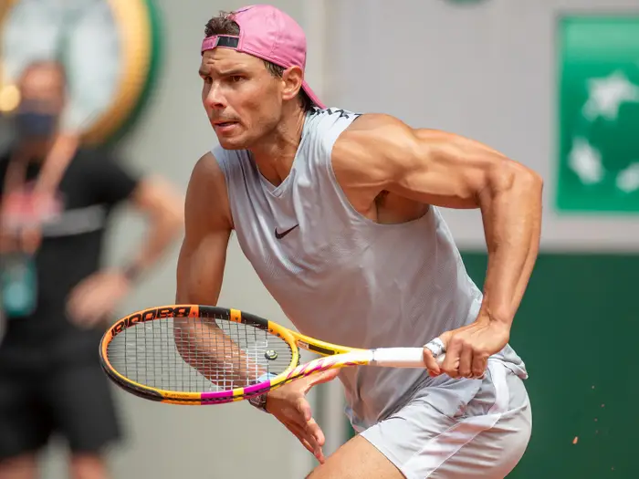

rafael nadal
He is ranked world No. 4 in singles by the Association of Tennis Professionals.
he has been ranked world No. 1 for 209 weeks and finished as the year-end No. 1 five times.
Nadal has won 21 Grand Slam men's singles titles, the most in history, including a record 13 French Open titles.
He has won 91 ATP singles titles (including 36 Masters titles), with 62 of these on clay.
Nadal's 81 consecutive wins on clay is the longest single-surface win streak in the Open Era.
Nadal was one of the most successful teenagers in ATP Tour history, reaching No. 2 in the world and winning 16 titles before his 20th birthday, including his first French Open and six Masters events.
Nadal became No. 1 for the first time in 2008 after his first Major victory off clay against his rival, the longtime top-ranked Roger Federer, in a historic Wimbledon final.
He also won an Olympic gold medal that year in singles in Beijing.
